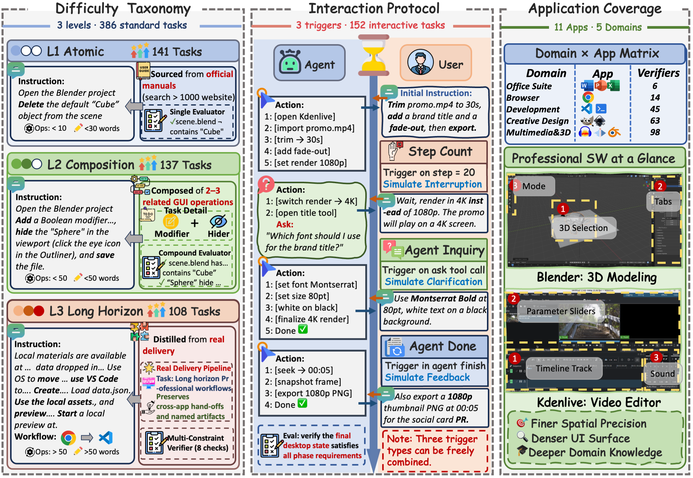

Benchmarking Desktop Agents on Professional Workflows and Human-in-the-Loop Collaboration
1Zhejiang University ·
2Tsinghua University ·
3Tencent ·
4The University of Hong Kong
*Equal contribution · †Corresponding author
Real-world professional desktop workflows in specialized creative and engineering software unfold over long horizons and often require human-in-the-loop coordination, where agents proactively seek necessary information and users provide additional instructions, clarifications, feedback, or corrections as the task progresses. Yet existing desktop GUI benchmarks mostly reduce this setting to short, simplified tasks with all user instructions provided upfront. To address this issue, we introduce DeskCraft, a desktop GUI benchmark targeting long horizon creative and engineering workflows and proactive human-agent collaboration. DeskCraft organizes tasks into a multilevel difficulty taxonomy, with long horizon tasks requiring over 50 execution steps, and covers professional creative software across design, video, audio, and 3D creation. Furthermore, DeskCraft formalizes human-agent collaboration into an interaction protocol covering mid-turn and post-turn exchanges. We evaluate 18 proprietary and open source agents on 538 tasks and find that GPT-5.4 reaches 31.6% on standard tasks and 27.6% on interactive tasks. Further analyses reveal persistent failures in long horizon workflow delivery and proactive clarification.
DeskCraft combines a three-level difficulty taxonomy, a composable human-in-the-loop protocol, and broad coverage of professional desktop software.

Figure 1. Overview of DeskCraft. Left: 386 standard tasks stratified into L1 atomic, L2 compositional, and L3 long horizon levels. Middle: 152 interactive tasks driven by three composable triggers. Right: 11 applications across 5 domains, including professional software such as Blender and Kdenlive.
Tasks progress from atomic GUI operations (L1) to compositional multi-step actions (L2) and long-horizon delivery workflows distilled from real professional scenarios (L3).
Interactive tasks evolve through deterministic phase triggers — agent clarification, user interruption, and post-completion feedback — enabling reproducible collaboration.
Programmatic evaluators inspect final desktop state, project files, exported artifacts, browser state, media metadata, and structured documents — no subjective manual scoring.
Real desktop work evolves as execution proceeds. DeskCraft models collaboration as an executable phase protocol with three composable trigger types.
agent_ask
Fires when the agent emits ASK to solicit clarification under uncertainty.
Typical scenarios: ambiguity resolution, information requests, risky operation approval.
step_countFires after a predetermined number of execution steps while the agent is still working. Typical scenarios: user interruption, goal shift, constraint addition.
agent_done
Fires when the agent emits DONE, allowing the user to verify deliverables
and issue follow-up instructions. Typical scenarios: feedback, correction, progressive
refinement, extension.
11 applications across 5 domains — from office suites to professional creative and engineering software that demands finer spatial precision and deeper domain knowledge.
Plus OS-level operations and multi-app cross-application workflows. Task split: 386 standard + 152 interactive = 538 total.
We evaluate 18 proprietary and open-source agents. Even the strongest models remain far from reliable on professional desktop workflows.
| Agent | Standard (386) | Interactive (152) | Best Domain (Std.) |
|---|---|---|---|
| GPT-5.4 | 31.6% | 27.6% | Writer 50.0% |
| Kimi-K2.6 | 33.8% | 25.7% | Blender 67.6% |
| Kimi-K2.5 | 20.3% | 24.0% | Writer 33.3% |
| Qwen3.5-35B-A3B | 11.1% | 12.4% | Multi-app 17.9% |
| Qwen3.5-397B-A17B | 12.9% | 11.7% | OS 26.7% |
| EvoCUA-32B | 11.4% | 0.7% | Chrome 24.2% |
| OpenCUA-32B | 9.6% | 0.0% | VS Code 16.7% |
| UI-TARS-1.5-7B | 3.1% | 0.0% | VS Code 10.0% |
Task-level success rate (SR, %). Bold = best per column; dotted underline = runner-up. Full per-application results are in the paper.
DeskCraft is the first desktop benchmark to jointly support long horizon professional workflows, a human-in-the-loop protocol, and structured difficulty levels.
| Benchmark | Domain | #Tasks | LH Focus | User Int. | Diff. Lvls. |
|---|---|---|---|---|---|
| OSWorld | Desktop (Ubuntu) | 369 | ✗ | ✗ | ✗ |
| WAA | Desktop (Windows) | 154 | ✗ | ✗ | ✗ |
| macOSWorld | Desktop (macOS) | 202 | ✗ | ✗ | ✗ |
| WorldGUI | Desktop (Windows) | 611 | ✗ | ✗ | ✗ |
| MobileWorld | Mobile | 201 | ✓ | ✓ | ✗ |
| τ-bench | API + User | 165 | ✗ | ✓ | ✗ |
| DeskCraft (Ours) | Desktop (Ubuntu) | 538 | ✓ | ✓ | ✓ |
DeskCraft runs inside real virtual desktops (Docker, VMware, AWS, etc.) inherited from the OSWorld / desktop-env framework.
pip install -r requirements.txt
python -m playwright install
python quickstart.py \
--provider_name docker --headless
python runners/run_multienv_*.py \
--domain gimp --num_envs 3
If you find DeskCraft useful, please cite our paper.
@misc{deskcraft2026,
title = {DeskCraft: Benchmarking Desktop Agents on Professional Workflows and Human-in-the-Loop Collaboration},
author = {Wang, Wenkai and Xiong, Tao and Ni, Jingchen and Bao, Yunpeng and Li, Xiyun and Liu, Tianqi and Guo, Hongcan and Huang, Zilong and Zhang, Shengyu},
year = {2026},
note = {Benchmark for professional desktop workflows and human-in-the-loop collaboration}
}